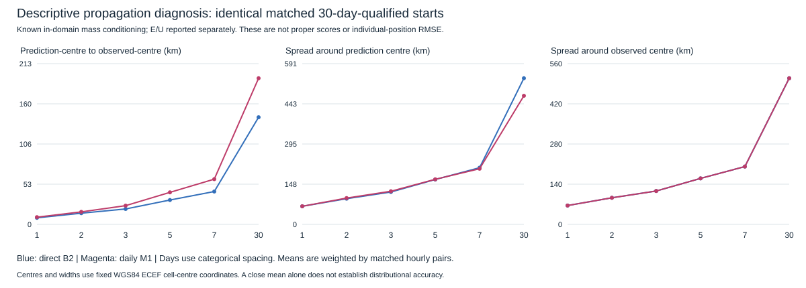
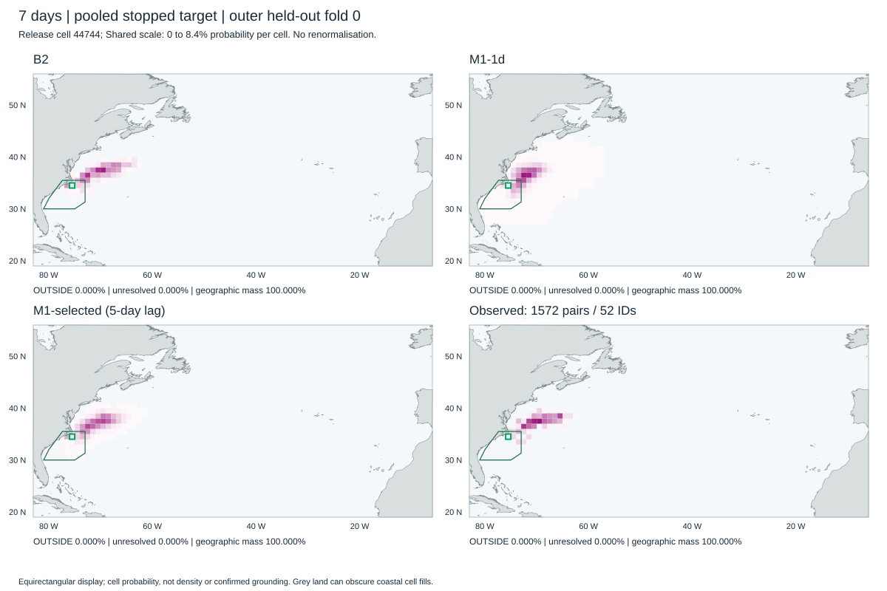
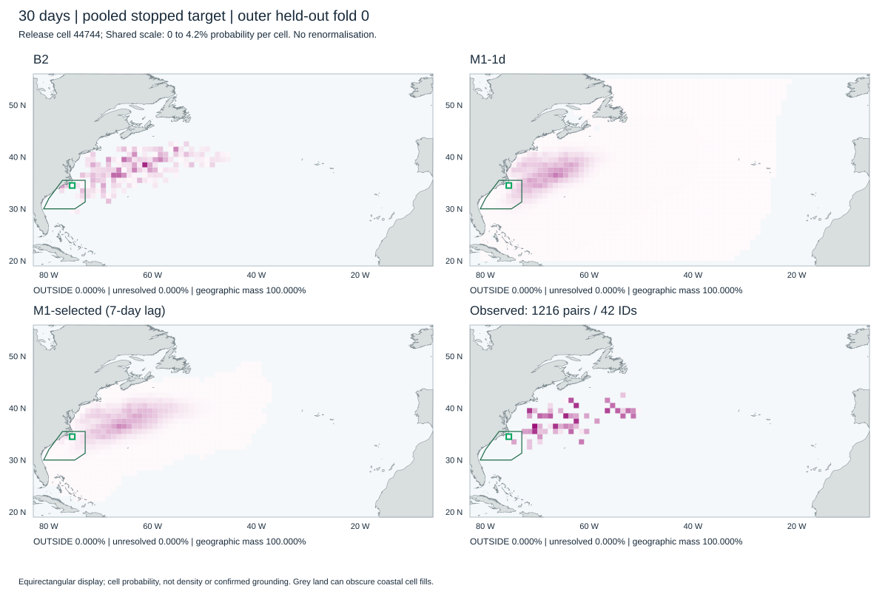

Development outer-held-out results; no final-test score. Lower S is better, not percentage accuracy. Read the report for matched-cohort and uncertainty limits.
Full report | Complete score table
| horizon_days | model | brier_failure_penalized | region90_hit_pct_available | mean_region90_cells |
|---|---|---|---|---|
| 7 | B1 | 0.979073 | 89.031218 | 48.507254 |
| 7 | B2 | 0.929001 | 87.439002 | 18.225812 |
| 7 | M1-1d | 0.932844 | 89.033856 | 21.765761 |
| 7 | M1-selected | 0.927354 | 89.542943 | 19.922803 |
| 30 | B1 | 0.991465 | 85.179815 | 136.293943 |
| 30 | B2 | 0.994751 | 66.372612 | 62.608321 |
| 30 | M1-1d | 0.988099 | 83.373111 | 95.905906 |
| 30 | M1-selected | 0.985785 | 87.349348 | 96.233898 |


